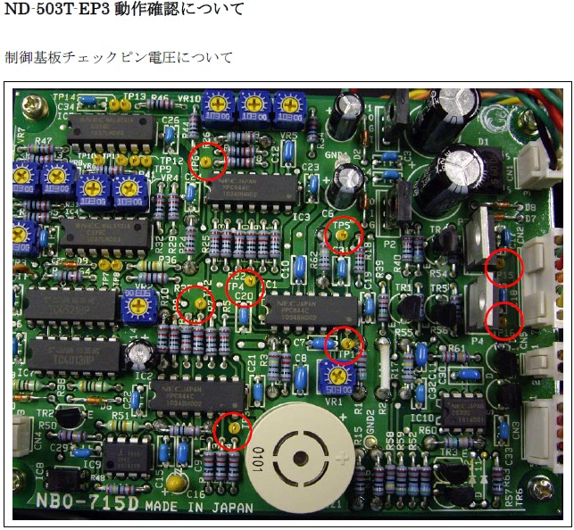

Service History
Subject: NS-8080 chamber cleaning alarm
Handler Model: NS-8080
Controller: RC520
Date: 25 Mar 2011
Symptom
ASE I NS-8080 chamber cleaning alarm.
Action
1. In HOT mode, NS8080 has frequent cleaning alarm.
2. Noticed ADJ led for +ve and -ve very dim, flickering or OFF in HOT mode.
3. In AMB mode, it is strong and stable.
4. According to EPSON, the LED light is not related to emission. In HOT mode, corona discharge increases compared to AMB resulting in output voltage drop(LED dim).
5. EPSON to reply on cleaning warning in HOT as switching to AMB, will not have error.
Remarks:
25 Mar 2011 email from Hidaka-san to Melvin
We have received reply from Ionizer supplier.
Conclusion: It does not have any problem LED lamp is dim during HOT mode.
The LED lamp is connected with output voltage.
The Ionizer is that it is made Ion by corona discharge.
Then, it is discharged target items.
The electron: To move more active during Hot environment
To flow discharged electron more.
It has constant current circuit.
From the above condition, when it is running on the hot environment,
corona discharge current is more than ambient.
So, constant current circuit will be stable for current,
then, output voltage will be dropped.
After the above, LED lamp is dim because
the LED lamp is connected with output voltage.
Please measure the voltage between CP1 to 6 15,16 and GND for board of ND-503T-EP3.
(CP1- GND, CP2-GND, CP3-GND... CP16-GND)
Total measurement point has 8 points.

Below is the reading taken on EP3 controller of our office NS8080. Also attached picture of controller with +HV/-HV Led in ambient and hot mode(100deg).
1. CP1 hot –2v, amb –2v
2. CP2 hot –2v, amb –2v
3. CP3 hot +2.7v, amb +3.3v
4. CP4 hot –0.5v, amb –0.5v
5. CP5 hot –0.5v, amb –0.5v
6. CP6 hot +2.7v, amb +3.4v
7. CP15 hot +4v, amb +4.6v
8. CP16 hot +4v, amb +4.6v
Cause